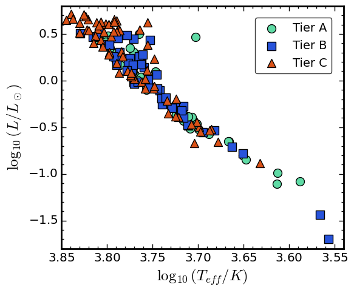
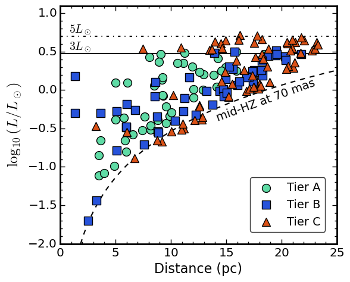

Figure 1. H-R diagram for stars in the ExEP Mission Star List. The Astro 2020 Decadal Survey "Pathways to Discovery in Astronomy and Astrophysics" has recommended that "after a successful mission and technology maturation program, NASA should embark on a program to realize a mission [hereafter the Habitable Worlds Observatory, or HWO] to search for biosignatures from a robust number of about 25 habitable zone planets and to be a transformative facility for general astrophysics." They prescribed that this high-contrast direct imaging mission would have "a target off-axis inscribed diameter of approximately 6 meters," but the final design of HWO, and the science return of the mission's survey for exo-Earths, will be informed and enhanced by mission-enabling precursor/preparatory science. Starting from the NASA ExEP Mission Star List for the Habitable Worlds Observatory, I'm working to identify and improve our understanding of the most promising targets for HWO, which will help to inform the design of the flagship mission that is currently in the earliest stages of planning.
Figure 2. Stellar luminosity vs. distance for stars in the ExEP Mission Star List. The NASA ExEP Mission Star List for the Habitable Worlds Observatory (hereafter "EMSL"), is a star list compiled to motivate observations and analysis to help inform observatory design (mission-enabling "precursor science") and enhance the science return of the Habitable Worlds Observatory (HWO) survey for exo-Earths (mission-enhancing "preparatory science"). Currently, I'm working to expand the information contained in the original EMSL by searching for archival photometry, elemental abundance measurements, and other stellar properties to build a more complete picture of this sample of possible HWO targets. This early work will play an important role in informing decisions that will lead to optimizing the design of HWO to meet its science goals. Figure 1 shows an H-R diagram for stars in the original EMSL, and Figure 2 shows stellar luminosity vs. distance for the same group of stars.